CABG手技アトラス
これから冠動脈外科をやる外科医のために
「どうやって心臓を脱転するのか」「どうトレーニングするのか」「多枝バイパスのコツ」「グラフトのデザイン」 — 冠動脈外科をこれから自分の手でやっていく外科医が、実際に手を動かす前に読んでおくべきことを、一次文献50編を精読して再構成した。すべての主張には出典を付し、原典の図59点を実物のまま引用している（作図は一切していない。図が無い手技は「図が無い」と書いた）。
エビデンス（OPCAB vs ONCAB の生存率、CABG vs PCI など）は本書の主題ではない。それは cabg_evidence/ の265文献が担当する。本書は how-to に振り切っている。
目次
| 章 | 内容 |
|---|---|
| 第1章 | 準備 — 解剖・術式選択・オペの振り付け |
| 第2章 | 心臓の脱転 — なぜ壊れるのか、どう持ち上げるのか |
| 第3章 | 導管採取 — ITA・橈骨動脈・no-touch SVG・GEA |
| 第4章 | グラフトデザイン — 多枝バイパスの設計 |
| 第5章 | 吻合と難しい標的 |
| 第6章 | トレーニング — 何から始め、何例で何が変わるか |
| 付録 | 図表一覧・出典一覧・著作権 |
第1章 準備 — 解剖・術式選択・オペの振り付け
1-1. 解剖でまず押さえること
冠動脈は右冠尖・左冠尖から起こり、左主幹部は LAD と回旋枝に分岐する。刺激伝導系の血流は主として RCA 由来で、洞結節枝は RCA 近位から、房室結節枝は優位 RCA の遠位から分岐する〔Kesieme 2025〕。この一文が手技的に意味するのは、「狭窄はあるが開存している RCA を近位でスネアすると房室ブロックが起こりうる」ということである。Ricci らは、この理由で狭窄はあるが開存した RCA を吻合するときはルーチンに冠内シャントと心室ペーシングワイヤを併用すると明記している〔Ricci 2000〕。
もうひとつ、術前に必ず確認すべき変異が心筋内走行（intramyocardial / embedded）LAD で、報告された頻度は 2.2〜13% と幅がある〔Osman 2026〕。触知でも視診でも同定できず、探して心筋を切り込めば右室・左室を穿孔しうる。対策は第5章に置いた。
1-2. 4つの術式から選ぶ
Magee と Edgerton は、孤立性 CABG の全例に対して4つの選択肢を優先順位つきで検討するという形で戦略を言語化した〔Magee 2003〕。
- 拍動下・人工心肺なし（BH＝beating heart, OPCAB）
- 人工心肺併用・拍動下（on-pump beating）
- 人工心肺・心停止（conventional）
- 低侵襲アプローチ
重要なのは順序そのものではなく、「症例ごとに毎回この4択を意識的に選び直す」という態度である。彼らは「大半の心臓外科医はすでに拍動下手術に必要な技術を持っている。いつ辛抱強く待ち、いつ押し、いつ介入するかを知ることのほうが、どんな手技よりも重要だ」と結んでいる。
1-3. オペの振り付け（choreography）と心膜切開
拍動下で心臓を持ち上げるためには、心臓が逃げる先を先に作っておく必要がある。Magee らは心膜切開を横隔膜に沿って下大静脈方向へ逆T字型に大きく延長することを最初の一手に挙げている。
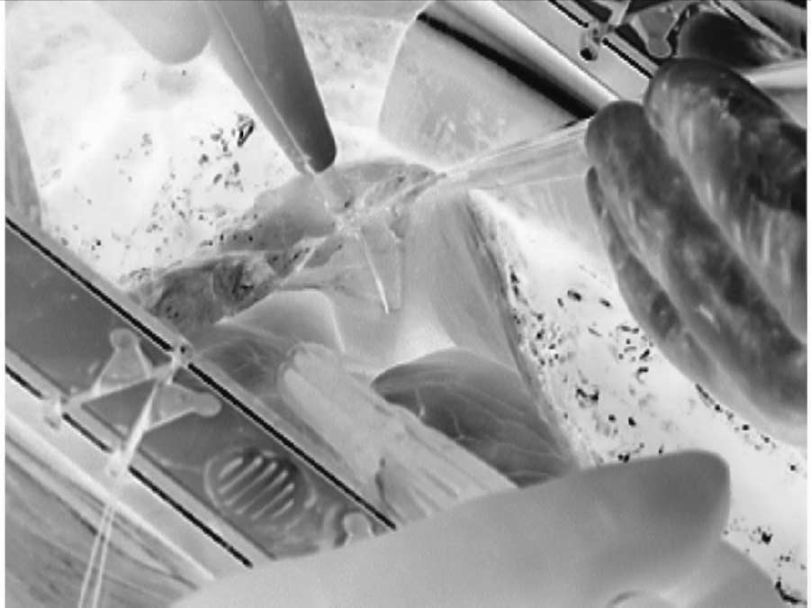
同論文は展開・虚血・脱転時間を最小化する具体的マニューバを表にまとめている（心膜を逆T字に広く切開する、標的以外の心膜牽引糸を緩める、など）。
1-4. 吻合の順序 — 虚血する心筋を最小にする
拍動下では大域的虚血は無いが、吻合するたびに局所虚血が起きる。Magee らの原則は明快で、
- 側副血行を受けている枝を、供給している枝より先に（collateralized before collateralizing）
- 完全閉塞している枝を、狭窄にとどまる枝より先に（totally occluded before less occluded）
Nierich も同じことを述べている——「完全閉塞した血管を先に吻合すれば、次の血管を遮断する間、その領域を側副血行で灌流できる」〔Nierich 2000〕。
1-5. なぜ LAD を最初に吻合するのか
従来の心停止 CABG では LAD は最後に回すことが多いが、拍動下では LAD を最初に吻合する。理由は4つある〔Soltoski 1999／Ricci 2000〕。
- LAD の露出は最小限の脱転で済み、この間の血行動態は保たれる
- 左室前壁という広い領域を早期に再灌流できる
- その後の最大脱転に対する左室の耐性が上がる（＝バックアップになる）
- LITA-LAD を先に作っても、そのあとの心臓の把持・脱転は妨げられない（吻合部を損傷しないよう注意すれば）
Chang らのランダム化試験でも「OM 露出の間のバックアップとするため、全例で LAD を先に血行再建した」と明記されている〔Chang 2004〕。これは慣習ではなく安全装置である。
第2章 心臓の脱転 — なぜ壊れるのか、どう持ち上げるのか
脱転で血行動態が破綻する主因は 左室の収縮不全ではなく、右室の流入障害と変形 である。したがって対策は「強心薬」ではなく、①持ち上げ方を変える（圧迫しない）②前負荷を足す（Trendelenburg）③右室の逃げ場を作るの3つになる。そして破綻したまま冠動脈を切開してはいけない。
2-1. 機序 — 壊れているのは右心である
拍動豚心を Octopus で90度垂直脱転した実験〔Gründeman 1998〕では、
- 一回拍出量 58%、平均血圧 52% へ低下
- 冠血流は LAD −34%、RCA −25%、Cx −50%
- 右室拡張末期圧は 176% に上昇、左室拡張末期圧は不変（120%, n.s.）
そして20度 Trendelenburg を加えるだけで、心臓を90度挙げたまま一回拍出量は 87%、平均血圧はほぼ正常化し、冠血流も回復した。著者らはここから「冠血流の低下は冠動脈の機械的閉塞ではない（閉塞なら体位だけで戻るはずがない）」と結論している。
羊で右心補助を用いた実験〔Porat 2000〕はこれをさらに絞り込む。90度脱転で心拍出量は −46%、中心静脈圧は +137%、右室拡張末期圧は +350% に達したが、左房圧・左室拡張末期圧は有意に変化しなかった。右房から肺動脈へ血液を汲み出すポンプを作動させると心拍出量は +67% 回復した。壊れているのは右心の流入である。
臨床でも同じ像が見える。Nierich らは経食道心エコーで、脱転中に心房中隔が左方へ膨隆し、右室がくしゃりと潰れる（crumpled）のを記録している。
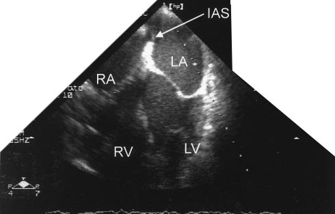
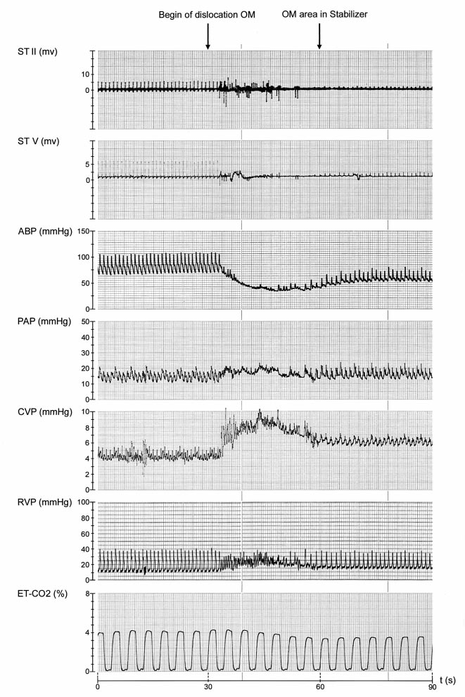
Nierich は「脱転した心臓では心臓と心膜の接触が失われて心電図の振幅が落ちるため、ST 監視は信頼できない」と明記している。虚血モニタとしての ST 変化を脱転中に信じてはいけない。
2-2. 展開の第一系統 — 深部心膜牽引糸（Lima stitch / single suture）
ブラジルの Ricardo Lima が記載した「心膜後面に置く複数の糸」を、Buffalo のグループが斜洞（oblique sinus）に置く1本の糸に単純化したのが single suture 法である〔Bergsland 1999〕。
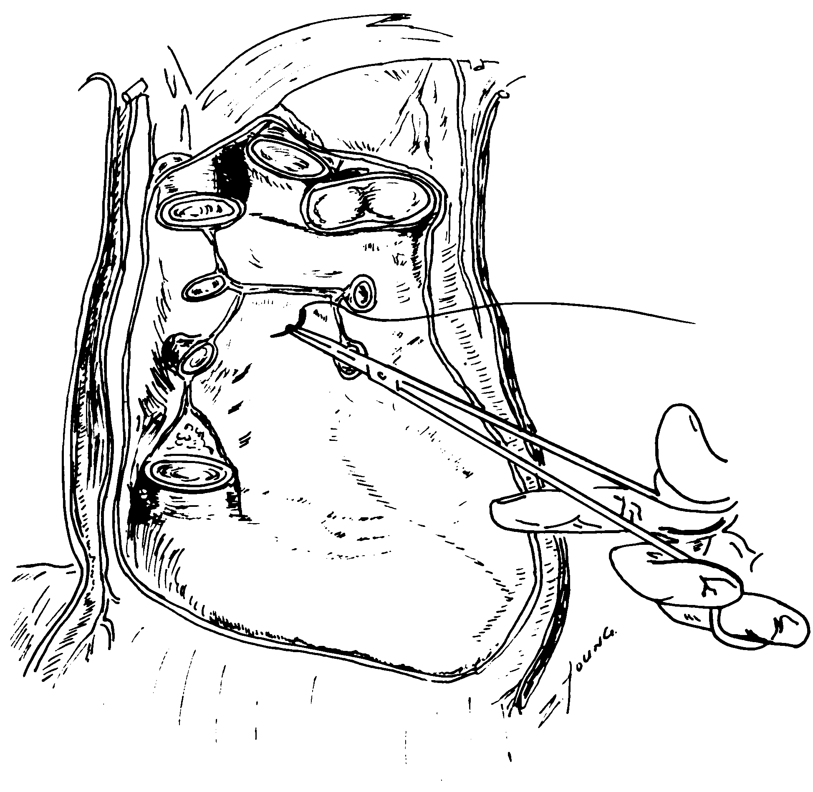
手順（Bergsland 1999／Ricci 2000）
- 術者は右側に立ち、左手で心臓を持ち上げて斜洞を露出する
- 0 絹糸または 1号 Ethibond を斜洞の心膜に 1針だけかける
- 心臓をすぐ心膜内に戻す（挙上は数秒でよい。一過性の血圧低下は戻せば消える）
- 糸を 15インチのvaginal tape（腟パック）を折り返した端に通す
- 再度心臓を挙げて心膜にもう一度通し、スネアで tape を心膜に密着させて締め下ろす
- tape を牽引して展開する
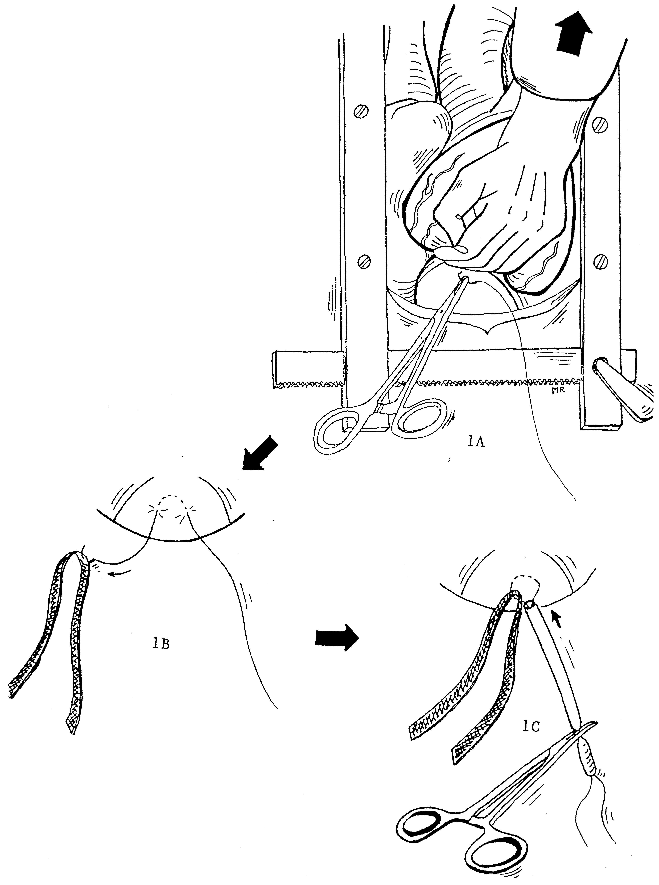
深く刺してはいけない。心膜のすぐ背側に下行大動脈と食道が走る。Ricci は「心膜の層だけを拾い、深いbiteを避けよ」と明記している〔Ricci 2000／Soltoski 1999〕。
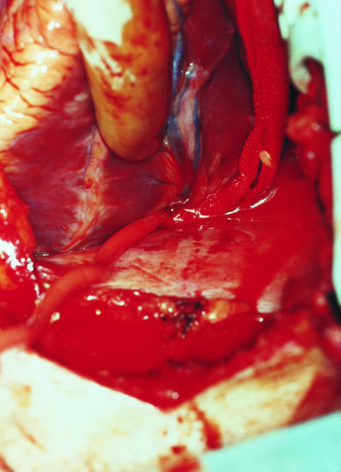
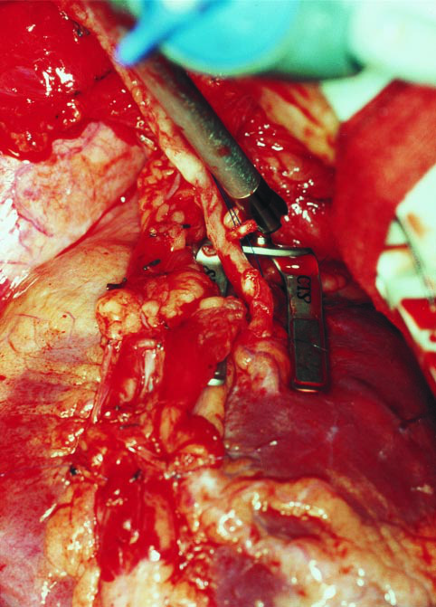
2-3. 展開の第二系統 — 標的別の牽引方向（この節が本書の中核）
Ricci らの一連の図は、どの枝を出すときに tape とスネアをどちらへ引くかを一枚ずつ示した、おそらく最も実用的な図譜である。原則はただ一つ——「持ち上げる。締めつけない」。
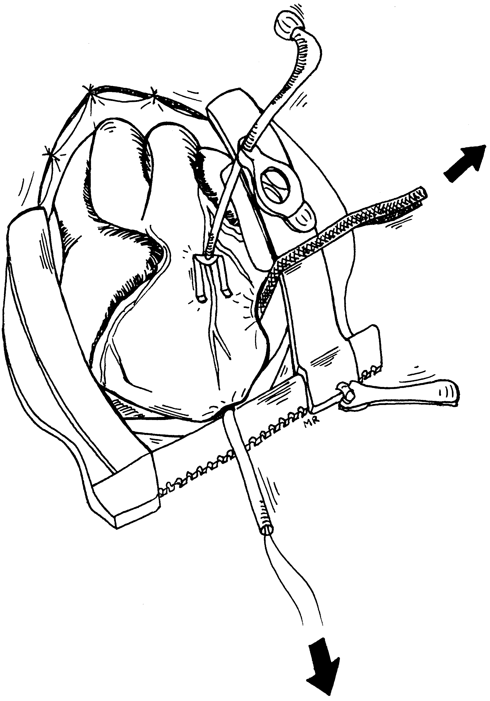
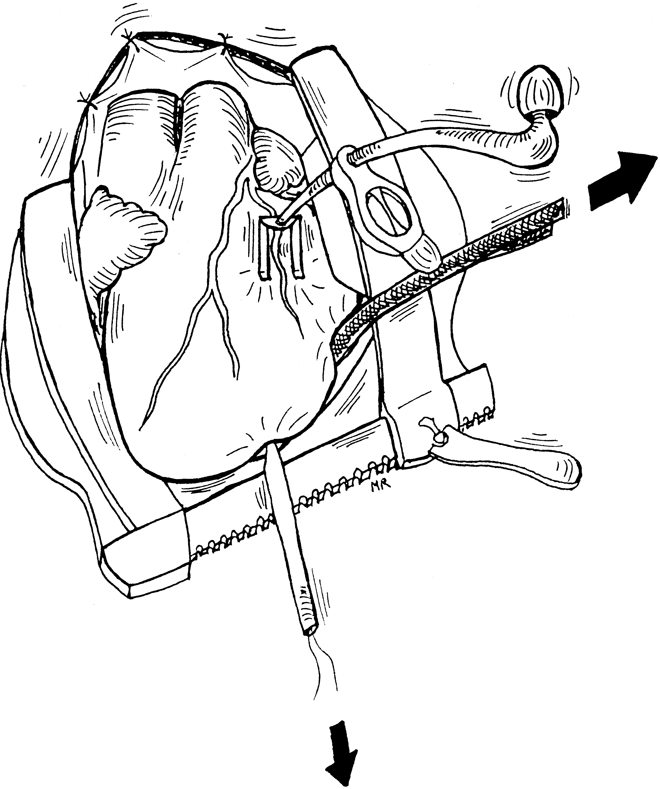
そして次の2枚が、この章で最も重要な対比である。同じ鈍縁枝を出す2つのやり方で、血行動態がまったく違う。
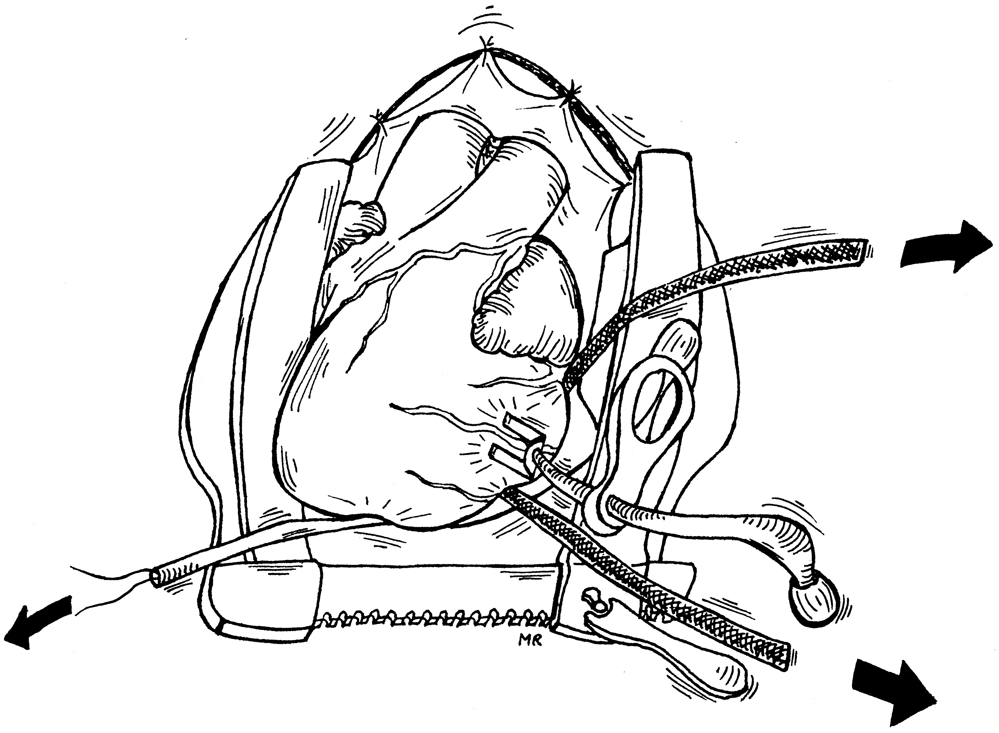
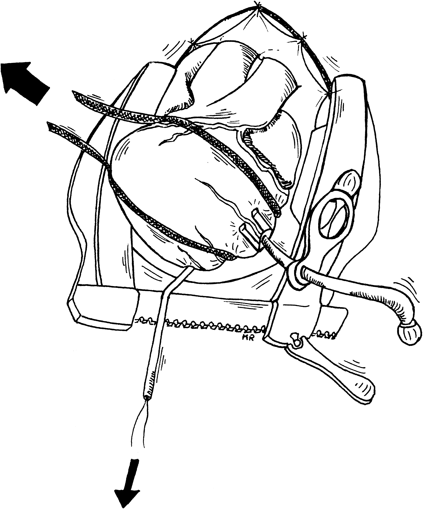
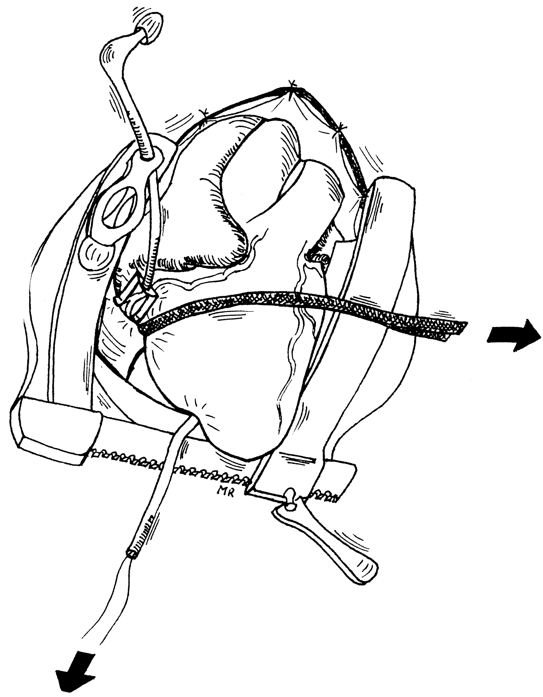
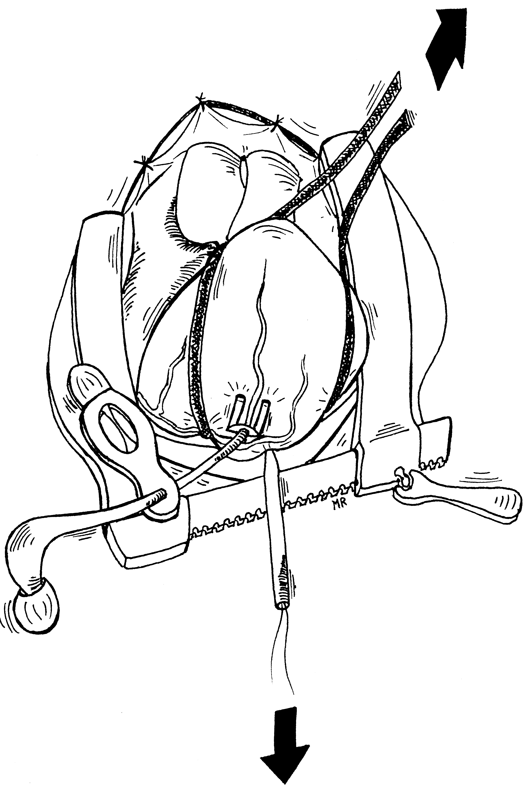
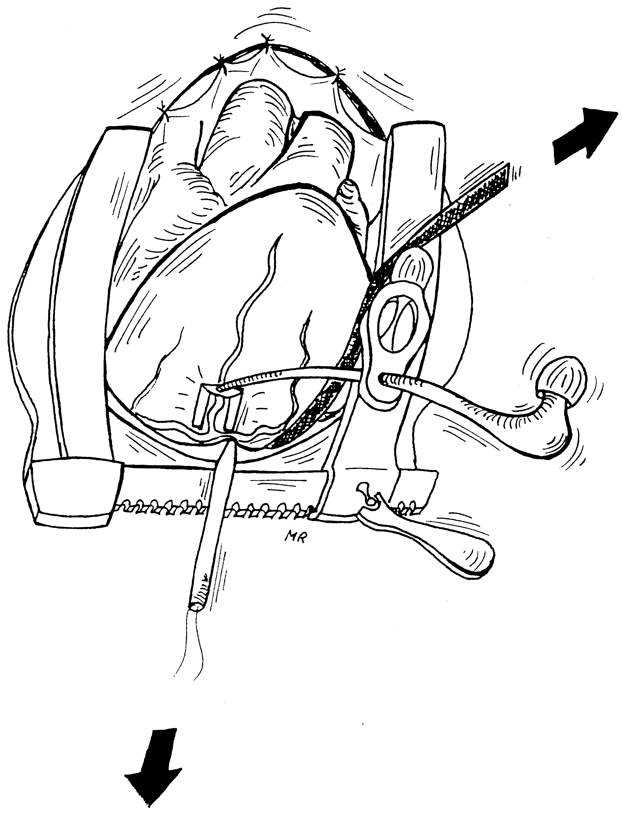
補助手技として、Ricci・Soltoski の両者が挙げているのが右胸膜の開放である。右胸腔を開けて一回換気量を下げると、心臓が右胸腔へヘルニアすることを許せるようになり、回旋枝の展開が格段に楽になる。
2-4. 展開の第三系統 — 心尖吸引ポジショナー
心膜牽引で「持ち上げる」代わりに、心尖を吸引して引っぱる方法がある。豚で Starfish（−400 mmHg）を用いた検討〔Gründeman 2004〕は劇的な差を示した。
| 90度前方脱転時 | Starfish（心尖吸引） | Octopus（後壁吸引で牽引） |
|---|---|---|
| 一回拍出量 | 94 ± 13% | 71 ± 6% |
| 平均血圧 | 95 ± 13% | 77 ± 8% |
| 冠血流 | 不変 | 低下 |
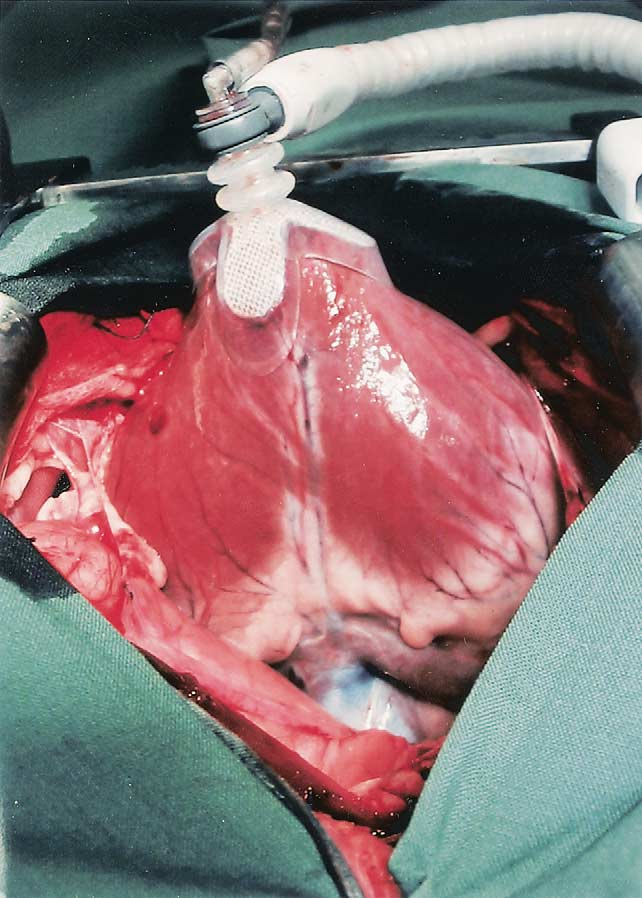
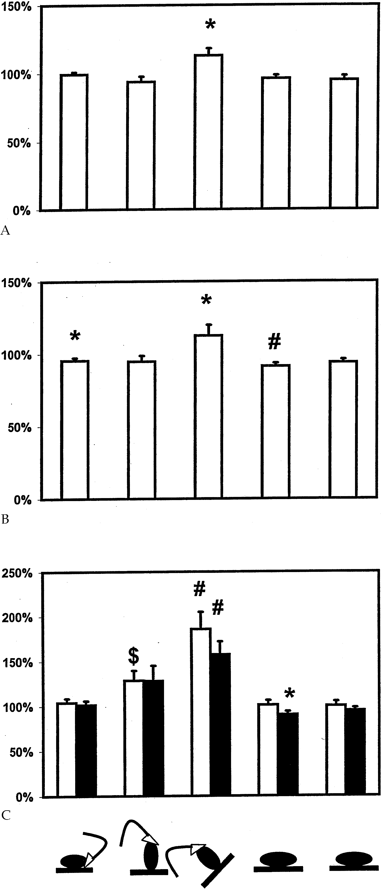
Gründeman は心拍出量をリアルタイムに見ながら脱転位置を決めており、「心尖の位置を1〜2 cm 変えるだけで心拍出量が 10〜15% 変わる」と記している。左室を長軸方向に引き伸ばしすぎると拍出量が落ちる。「一番よく見える位置」ではなく「一番心拍出量が高い位置」で止めるのが正解である。
臨床でも、深部心膜牽引糸と心尖吸引（Xpose）を鈍縁枝吻合で無作為比較した試験〔Chang 2004〕が同じ方向を示す。
| OM 吻合中（対ベースライン %） | 深部心膜牽引糸 | 心尖吸引デバイス | p |
|---|---|---|---|
| 心係数 | 73 ± 12% | 90 ± 11% | 0.002 |
| 一回拍出係数 | 69 ± 12% | 86 ± 8% | 0.037 |
| 右室一回仕事係数 | 30 ± 17% | 71 ± 25% | 0.008 |
吸引圧は 200〜250 mmHg、手術台は右へ10〜20度＋Trendelenburg 10〜20度。ただし両群とも人工心肺への移行・IABP 挿入は1例もなく、著者らは「現行の手技（右胸膜開放、体位、深部心膜牽引糸あるいは心尖吸引、麻酔科の支持、LAD 先行）で血行動態の破綻は最小化・克服できる」と結んでいる。デバイスの欠点として装着部の心筋血腫・追加コスト・心尖収縮の部分的障害が挙げられている。
2-5. 数値目標 — どこまでなら進んでよいか
ここまでは「どう持ち上げるか」だった。「持ち上げた状態で冠動脈を切開してよいか」を判断する数値を、Shim らの総説が整理している〔Shim 2023〕。
- 平均血圧 > 70 mmHg
- 混合静脈血酸素飽和度 SvO₂ > 60% — 側壁吻合中に一過性でも 60% を割ると術後有害事象のオッズ比 2.72（95%CI 1.60–4.61）。同じ研究で平均血圧と心係数には差が出ず、SvO₂ のほうが予後を規定した。
- CVP < 肺動脈拡張期圧（PADP） — 等しいか CVP のほうが高ければタンポナーデ生理＝圧迫症候群であり、冠動脈を切開する前に圧迫を解除させる。
心拍数は「速ければ心拍出が増える」が酸素需要も直線的に増える。ペーシングは高度徐脈（< 55 bpm）に限り、70 bpm までは概ね安全、心不全や僧帽弁逆流があれば 80 bpm まで許容とされる。
薬剤の使い分けも明確である。
- ドパミンは避ける（不整脈原性と予後への悪影響）
- ノルアドレナリンを 0.3〜0.5 µg/kg/分まで、それを超えるならバソプレシン 2.4〜4 IU/時を追加（V1受容体は肺血管にほぼ無いため、肺血管抵抗を上げずに血圧を上げられる＝不全右室に有利）
- ミルリノンは β遮断薬内服中でも効果が読め、心筋酸素需給比を 1:1 に保つ。ボーラスなしの持続投与30分でボーラスと同等の効果が低血圧なしに得られる
- ドブタミンは β遮断薬内服例で反応が読めず、冠動脈疾患患者で需要が供給を超えうる
前負荷は輸液より体位で足す。Trendelenburg は中心血液量を増やしつつ側壁・後壁の展開自体も助ける。ただし長時間・過度の頭低位＋右室圧迫は脳静脈うっ滞を招き、術後の神経学的転帰を悪化させうる〔Shim 2023〕。
Nierich の実測では、胸骨正中切開では部位が後ろへ行くほど Trendelenburg が必要になる。
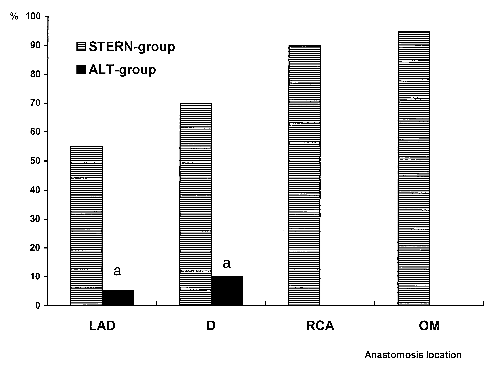
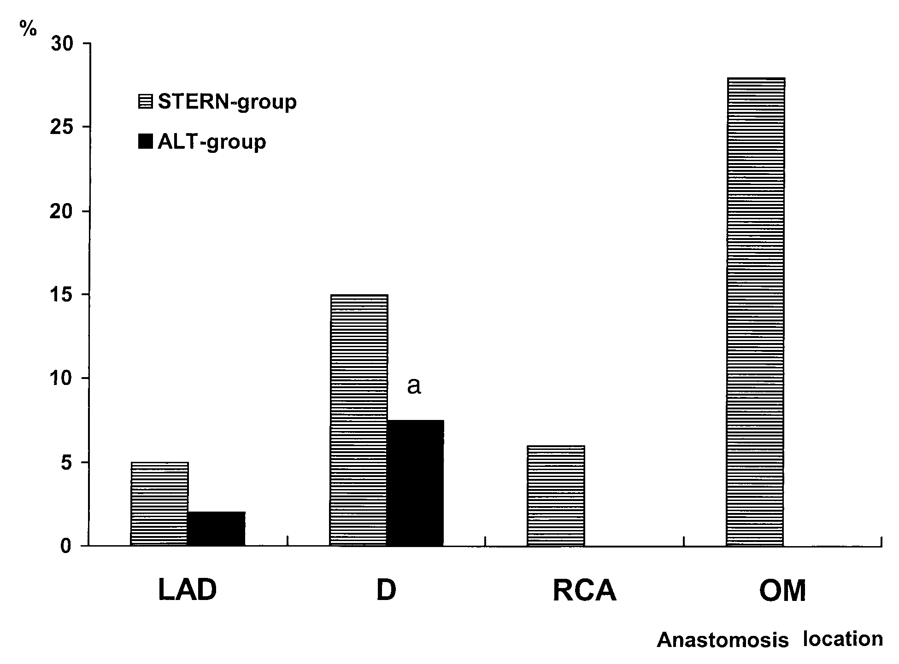
2-6. 経食道心エコーで何を見るか
Shim らは、脱転中の TEE で見るべき断面と見てはいけない断面を明確にしている〔Shim 2023〕。
- 中部食道4腔像は欺く — 側壁展開中は右室が実際以上に潰れて見える
- 中部食道 RV inflow-outflow 像が最も有用。右室自由壁、とくに流入部の圧排を評価する
- 右室流出路のピーク流速 > 4 m/s は重度の機械的閉塞であり回避すべき
- 拡張期に肺動脈弁が開くのは右室拡張末期圧が PADP を超えた極限状態
- 中部食道長軸像で、心室相互依存（奇異性中隔運動）、僧帽弁逆流の出現、左室流出路閉塞（SAM の有無を問わず）を除外する
- 上行大動脈を気泡がないか確認する — 大量の気体塞栓が右冠動脈入口部を塞ぐと血行動態が破綻する
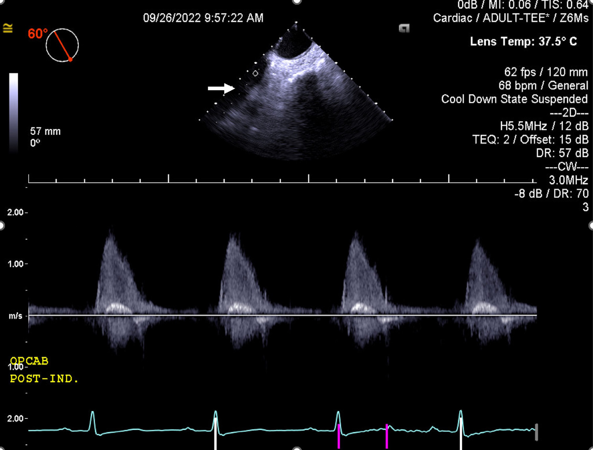
なお、右室を胸膜から解放するには垂直胸膜切開が試みられるが臨床的利益は不明。PEEP を切り一回換気量を下げるほうが確実に右室の逃げ場を作る〔Shim 2023〕。
2-7. 予測因子と転換（conversion）
脱転に耐えられるかを術前に確実に予測する指標は存在しない〔Shim 2023〕。それでも参考になるのは以下である。
- E/e′ > 15 の症例は、駆出率が保たれていても脱転中の血行動態悪化が有意に大きく、SvO₂ の低下も大きく、それが胸骨閉鎖後も戻らない。多枝 OPCAB の大規模後ろ向き研究では E/e′ は独立した危険因子だったが駆出率はそうではなかった
- 人工心肺への転換の危険因子として、術前心不全・左主幹部病変・3枝以上（最大規模の研究）、救済手術・左室肥大・再開心・脳血管障害既往・心筋梗塞既往・糖尿病・低体表面積（別の大規模研究）が挙がる
- 専門施設の転換率は概ね 3% 未満、逆に転換率が 10% を超えると死亡率上昇と関連する
緊急転換は予後が悪い。待機的転換は悪くない。〔Shim 2023〕したがって、目標値（MAP > 70／SvO₂ > 60%／CVP < PADP）を満たせず、圧迫を緩めても回復しないなら、冠動脈を切開する前に待機的に人工心肺へ移行する。切開してから破綻すると、それは緊急転換になる。
2-8. MICS-CABG での展開 — outside-inside 法
小開胸では斜洞に手が届かないため、上記の系統がそのまま使えない。Albert らはこれを2本の心膜内ターニケットと、その間の心膜のひだで置き換えた〔Albert 2024〕。
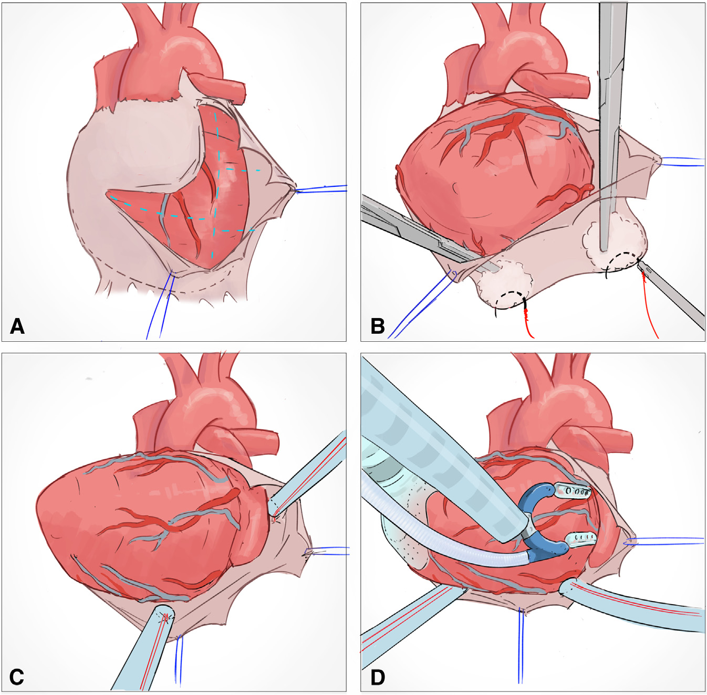
要点は**「梃子の原理」である。Albert は「スリングを斜洞の深くに固定すればするほど、心臓を安全かつ容易に脱出させられる」と書く。MICS では斜洞に届かないので、ターニケットをできるだけ後方・右方**に置いてひだを作り、同じ効果を得る。
Albert は「MICS-CABG は心臓の完全な脱出を必要としない。心尖スタビライザを使わなくても側壁・後壁の露出が良好なことが多い」とし、自施設の患者は従来型 OPCAB より血行動態が安定している印象だと述べている（臨床試験での検証が必要、とも明記）。従来 MICS の禁忌とされた4条件（遠位鈍縁枝・遠位PDAなど小さい標的、駆出率<35%、心胸郭比>0.5、BMI>30）も、本法導入後は多くで克服できたという。ただし前提として、従来型 OPCAB と動脈グラフトの十分な経験を必須としている。
第3章 導管採取
3-1. 内胸動脈 — 骨格化するか、有茎か
13研究6,222例のメタ解析〔Kusu-Orkar 2021〕の結論は明快である。
| 骨格化 | 有茎 | 差 | |
|---|---|---|---|
| グラフト長 | — | — | +2.64 cm（95%CI 1.56–3.71, p<0.0001） |
| 吻合後流量 | 51 ± 16 mL/分 | 39 ± 12 mL/分 | +11.51 mL/分（p=0.01） |
| 胸骨創感染 | 有意差なし（OR 0.71, p=0.10） | ||
| 30日死亡・心筋梗塞 | 有意差なし |
出血に関しては単施設ランダム化試験がある〔Mazur 2021〕。62例で12時間ドレーン量が骨格化群で 28% 少なく（p=0.02）、新鮮凍結血漿の輸血も少なく、術直後・6時間・12時間のいずれでもCK が有意に低かった（例：12時間で 351 vs 695 U/L, p<0.001）。
一方、流量そのものには差が出ないとする3群ランダム化試験もある〔Laugesen 2024〕。有茎（n=56）・外科的骨格化（n=55）・Thunderbeat 骨格化（n=54）で LIMA 流量・拍動指数・出血・在院日数に差はなく、採取時間だけが有意に違った（有茎 20.2 ± 5.4 分 vs 骨格化 28.6 ± 8.7 分／Thunderbeat 28.3 ± 9.1 分, p<0.001）。採取ミスによる廃棄グラフトはゼロ、在院中のグラフト不全もゼロだった。
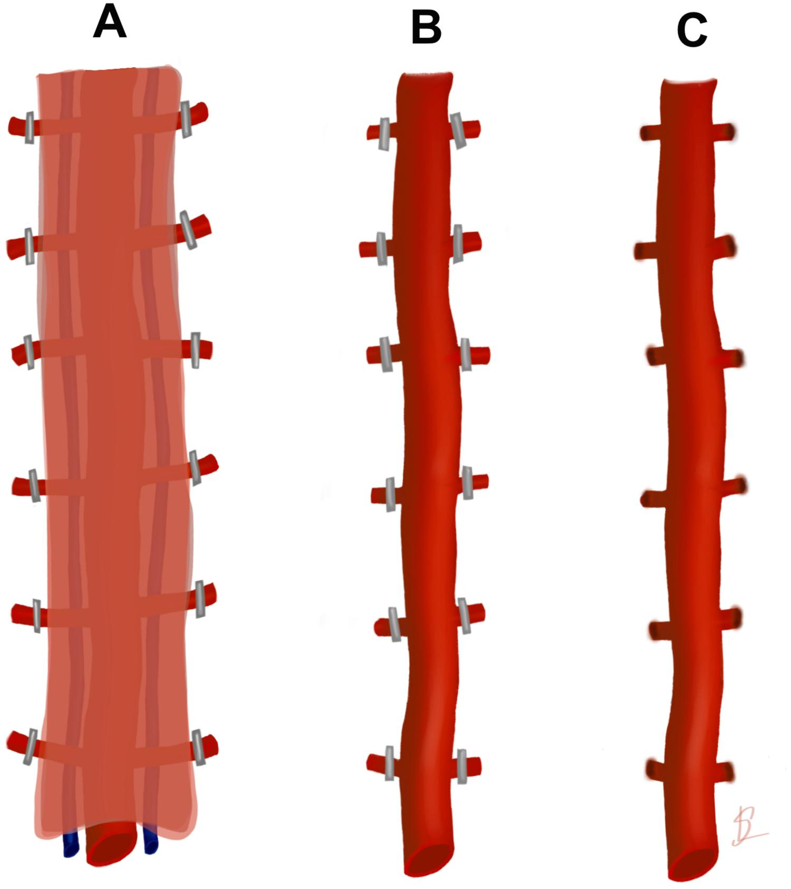
骨格化の最大の利点は「長さ」である（+2.64 cm）。これは第4章のグラフトデザインの自由度に直結する——RITA が回旋枝末梢や右冠動脈末梢に届くかどうかは、この 2〜3 cm で決まる。したがって「BITA・複合グラフトをやるなら骨格化」「単純な LITA-LAD だけなら有茎でも十分速くて安全」という整理になる。Kusu-Orkar も「とくに BITA 採取では骨格化を採るべき」と結論している。
3-2. 胸膜を開けるか、閉じたままにするか
2026年の RCT メタ解析（9試験1,869例）〔Ingason 2026〕。
| 閉胸膜 vs 開胸膜 | 効果 |
|---|---|
| 胸水 | OR 0.35（95%CI 0.25–0.48） |
| 無気肺 | OR 0.35（0.28–0.43） |
| FEV1 低下 | 平均差 13.0 少ない（7.3–18.7） |
| 人工呼吸時間 | −1.0 時間 |
| 24時間ドレーン量 | −150 mL |
| 手術死亡 | OR 0.37（0.20–0.66） |
| 心タンポナーデ | OR 11.05（1.14–106.82） |
呼吸器合併症は明らかに減るが、タンポナーデが増えるという無視できないトレードオフがある（著者ら自身が "highly concerning" と書いている）。胸膜を閉じたままにするなら、心嚢の排液経路を別途確保する設計が要る。
3-3. ロボットによる両側内胸動脈採取
胸骨を切らずに BITA を採る手技。Sutter はポート配置がすべてだと言い切る〔Sutter 2018〕。
- 術前に胸部X線／CTで心陰影が左胸郭の何%を占めるかを測り、その比率を第4〜5肋間に当てて心臓の外側縁を体表にマーキングする
- カメラポートは胸骨切痕と剣状突起の中点（ITA の上端・下端の両方が見える）
- 残り2本はカメラポートの上下 8〜10 cm
- 学習曲線（20〜30例）の間は、内視鏡ポートを心臓より十分外側に置く
- カメラポートのオブチュレータ挿入時は必ず人工呼吸器を外して肺を虚脱させる（Sutter はオブチュレータを "a lethal weapon" と呼ぶ）
Issa らの "10 Commandments" も同じ順序を重視し、「胸骨正中切開の OPCAB と、非胸骨切開の単枝 CABG を先に習熟してから、多枝・多動脈のロボット CABG に進むべき」という前提条件を明記している〔Issa 2025〕。
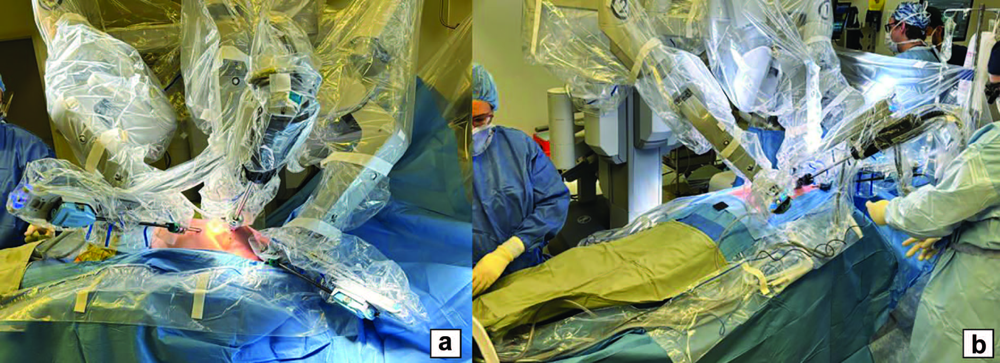
3-4. 橈骨動脈 — 攣縮を制圧できるかどうかがすべて
Tatoulis の招待手技論文〔Tatoulis 2021〕は、橈骨動脈を使うための解剖・評価・採取・攣縮対策を一続きで示している。
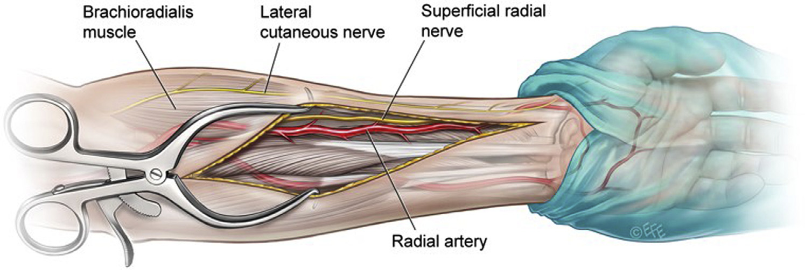
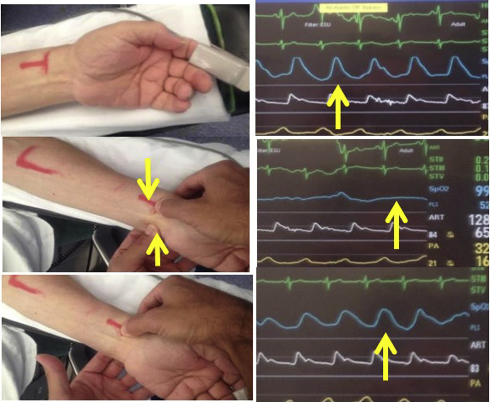
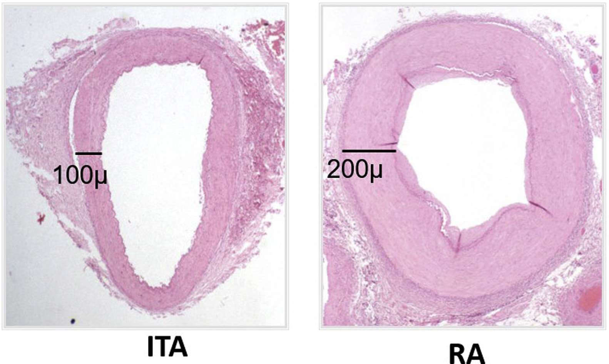
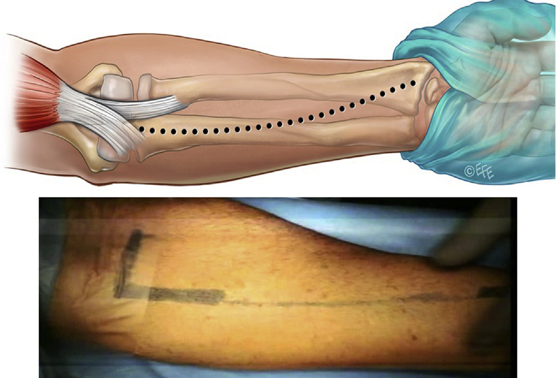
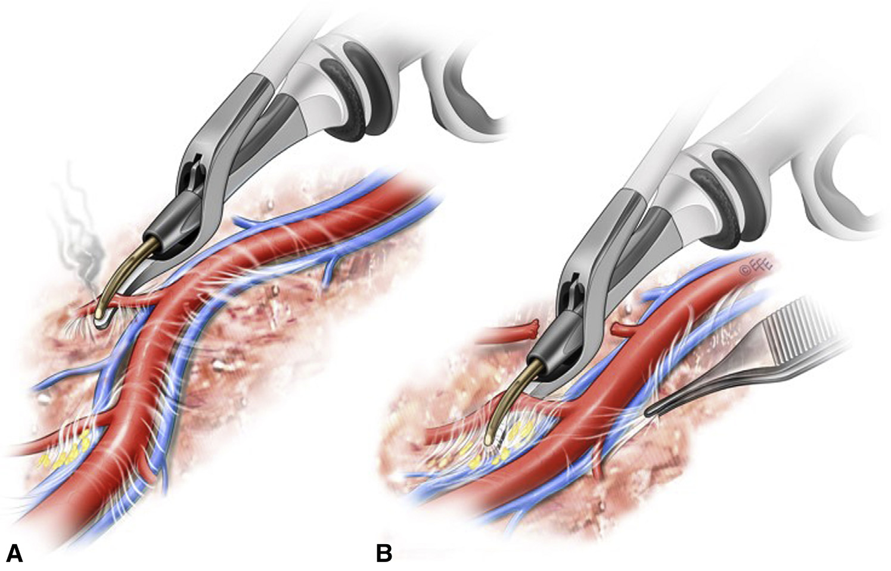
攣縮対策（Tatoulis 2021）
- パパベリン：30 mg をリンゲル液等に溶いて局所に。作用発現は分単位
- ニトログリセリン：作用は速いが半減期が短い。ベラパミルとの併用で持続時間が延びる（ベラパミルは最大8時間）
- カルシウム拮抗薬ではジルチアゼムは効果が弱く、ベラパミルが最良
- 全長の縦筋膜切開（fasciotomy）を行い、筋膜索による屈曲・絞扼を防ぎつつ最大拡張させる
- 術後もミルリノンまたはジルチアゼムの持続投与を24時間
Gaudino らのグループ横断レビュー〔Gaudino 2019〕は4通りの「バス（保存液）」を並記している（① ヘパリン加ポンププライム30 mL、② パパベリン65 mg＋ベラパミル5 mg、③ 37℃ヘパリン加血液、④ ベラパミル5 mg＋ニトログリセリン2.5 mg）。どれが最良かを示す大規模ランダム化データは無い、というのが正直な現状である。
橈骨動脈グラフトの開存は標的血管の狭窄が強いほど良い。ある研究では <75% 狭窄で 78.9%、75〜90% で 84.9%、>90% で 98% の開存率であり、<90% 狭窄の標的への吻合はグラフト不全の独立予測因子だった〔Gaudino 2019 が引用〕。「橈骨動脈は強い狭窄にしか使わない」——これは第4章の competitive flow と同じ話である。
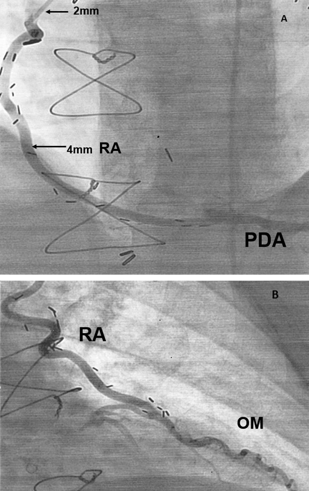
内視鏡採取 vs 直視下採取には 2026年の RCT がある〔Carranza 2026、300例〕。
| 3か月時点 | 内視鏡（n=151） | 直視下（n=149） |
|---|---|---|
| Hand Function Questionnaire（低いほど良い） | 7.20 | 7.74（差 0.52, p=0.03） |
| 神経学的障害 | 32例（21.2%） | 82例（55.0%） — RR 2.61（1.90–3.63） |
| 重篤有害事象（1年） | 9例（6.0%） | 4例（2.7%） |
手の機能スコアの差は臨床的最小重要差（およそ3点）に届かないが、神経障害の頻度差は 2.6倍と大きい。
3-5. no-touch 大伏在静脈
周囲組織を付けたまま採取し、電気メスの使用を最小限にし、採取後の過拡張（over-dilation）を行わないのが no-touch 法である〔Inaba 2020〕。Keio の41例の報告は、実務上の注意点を具体的に挙げている。
- 電気メスの使用を最小限に
- シリンジによる過拡張はしない
- ヘパリン加生理食塩水ではなくヘパリン加血液で内皮を保護する
- 採取部にドレーンを入れ、単結節縫合で閉創
- 弾性包帯と着圧ストッキングで液体貯留を防ぎ、創治癒遅延を避ける
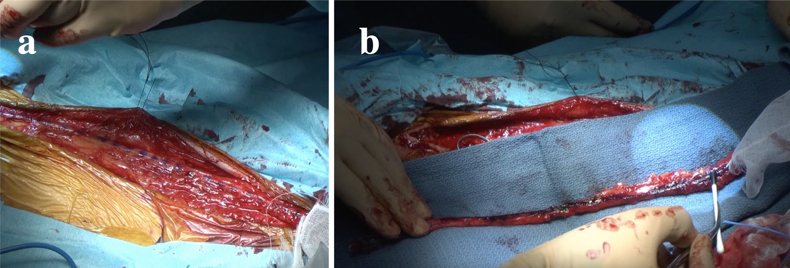
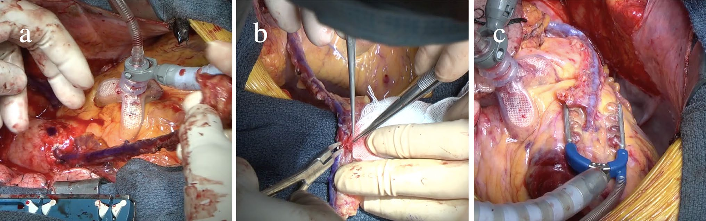
3-6. 右胃大網動脈
Suma の30年の経験〔Suma 2016〕が要点を1文にまとめている——「早期開存は高く、遠隔開存は骨格化と適切な標的選択（>90% の高度狭窄）によって改善した」。
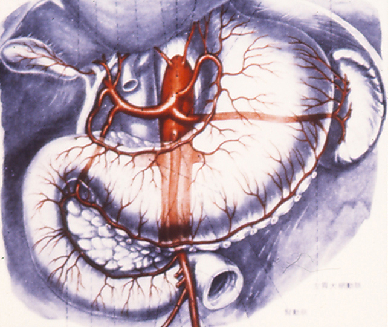
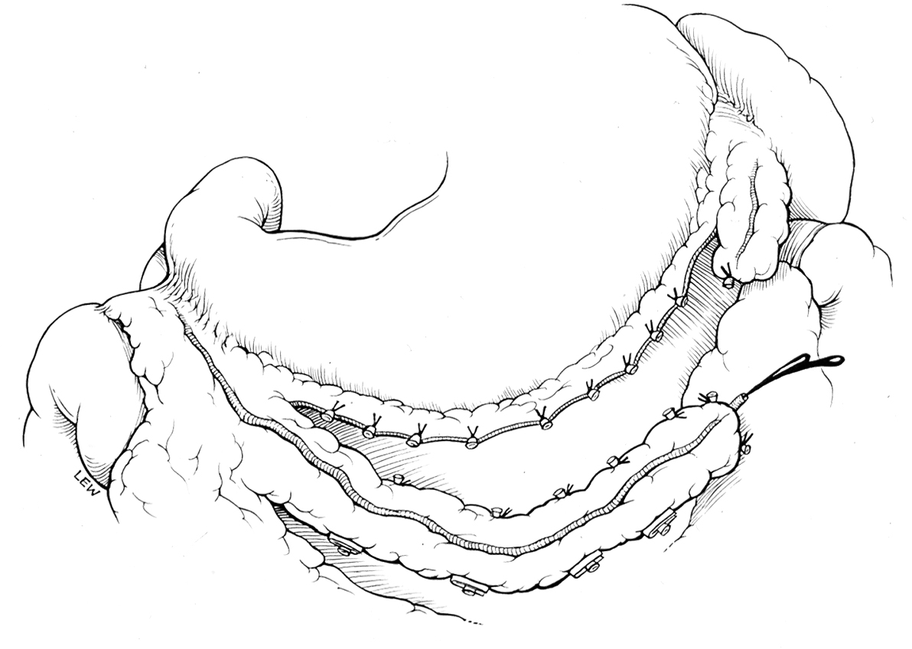
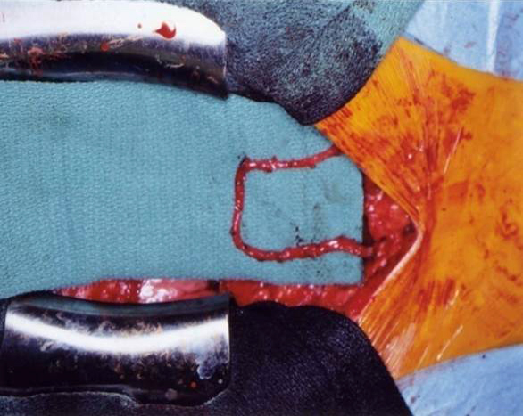
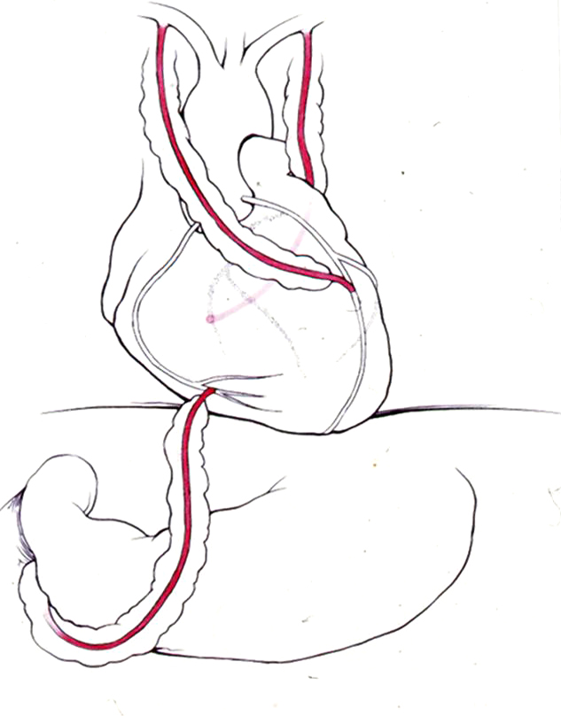
第4章 グラフトデザイン — 多枝バイパスの設計
4-1. 設計の原理 — set-point 理論
なぜ「狭窄の軽い標的に動脈グラフトを置くと閉じるのか」。Calafiore・Prapas・Gaudino は、これを内皮のずり応力（shear stress）set-point で説明する〔Calafiore 2025〕。
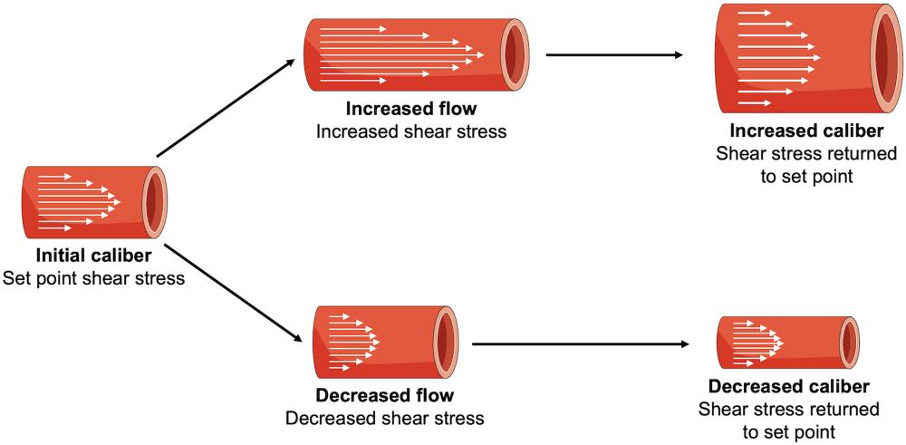
この理論の実務的な帰結は単純である。動脈グラフトは「流れなければ細くなる」。だから流れる場所に置く。
4-2. competitive flow と FFR — 何が言えて何が言えないか
Paterson らの専門家意見〔Paterson 2017〕は、この問題に冷や水を浴びせる。
- 競合血流は動的・相対的で、ある程度は不可避である
- FFR は狭窄の生理学的評価を改善するが、FFR が外科の臨床転帰を改善するというエビデンスは無く、慎重に使うべき
- グラフト配置（in situ か複合か）を変えて競合血流の影響を緩和できる余地は限定的であり、両側 ITA グラフトの各配置は同程度に競合血流の影響を受ける
Doenst らの実務的な視点〔Doenst 2022〕も同じ方向で、「中等度狭窄をどう扱うか」は外科的精度（surgical precision）の問題として扱われるべきだとする。
4-3. BITA — in situ か複合（Y/T）か
これはランダム化比較試験がある〔Glineur 2016、304例〕。
| in situ | Y グラフト | |
|---|---|---|
| ITA で再建できた標的数 | 2.4 ± 0.5 | 3.2 ± 0.8（p<0.01） |
| 3年造影開存 | 差なし | 差なし |
| 7年 MACCE | 34 ± 10% | 25 ± 12%（p=0.03） |
| 7年 再血行再建 | 14 ± 4.5% | 7.4 ± 3.2%（p=0.009） |
| 死亡・心筋梗塞・脳梗塞 | 差なし | 差なし |
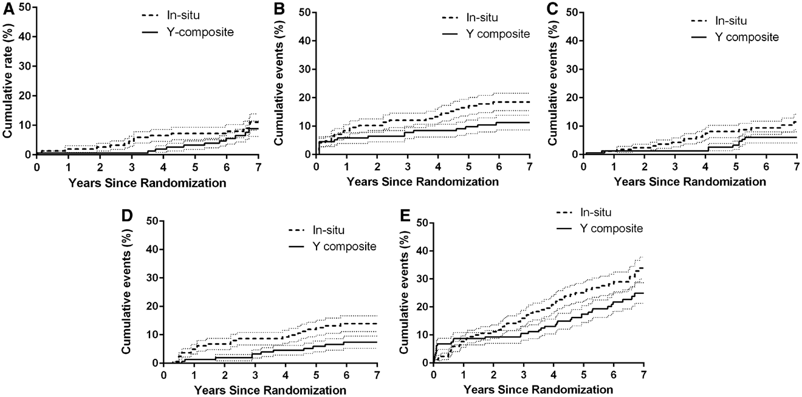
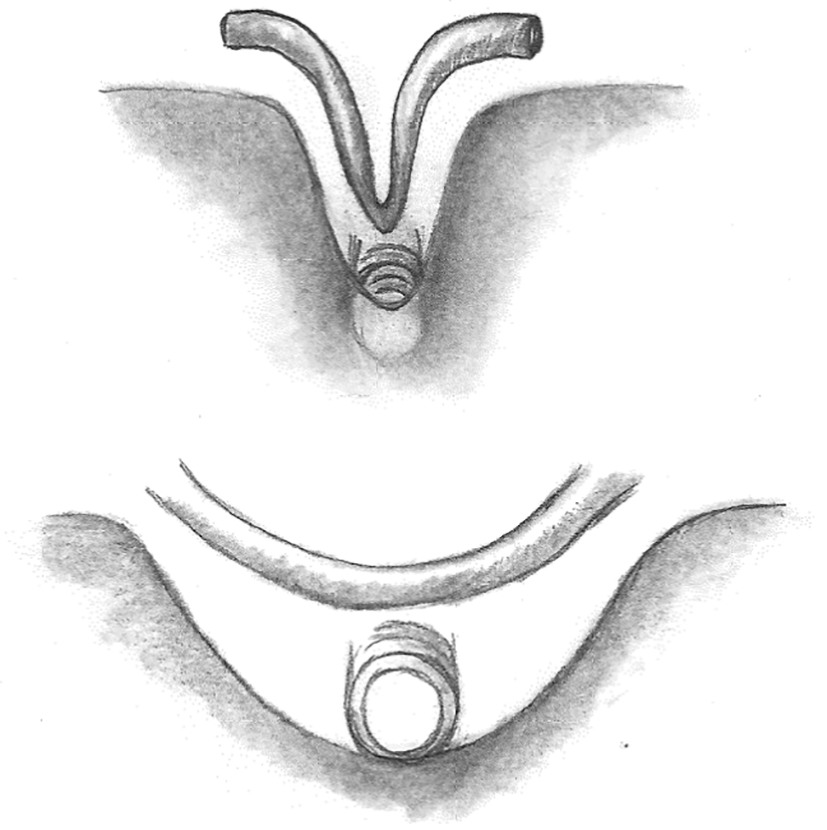
4-4. LAD は LITA か RITA か
BITA を使うとき、LAD には LITA・RITA のどちらを回してもよいのか。オタワの2,050例〔Jabagi 2020〕では、10年の全死亡・心臓死・LAD 領域の再血行再建（LITA-LAD 2.8% vs RITA-LAD 1.8%, p=0.38）のいずれにも差がなかった。結論は「外科医は BITA 再建時に RITA-LAD を用いることに自信を持ってよい」。
4-5. side-to-side 吻合の作り方と seagull effect
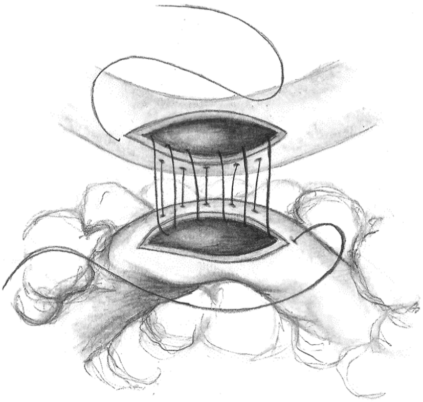
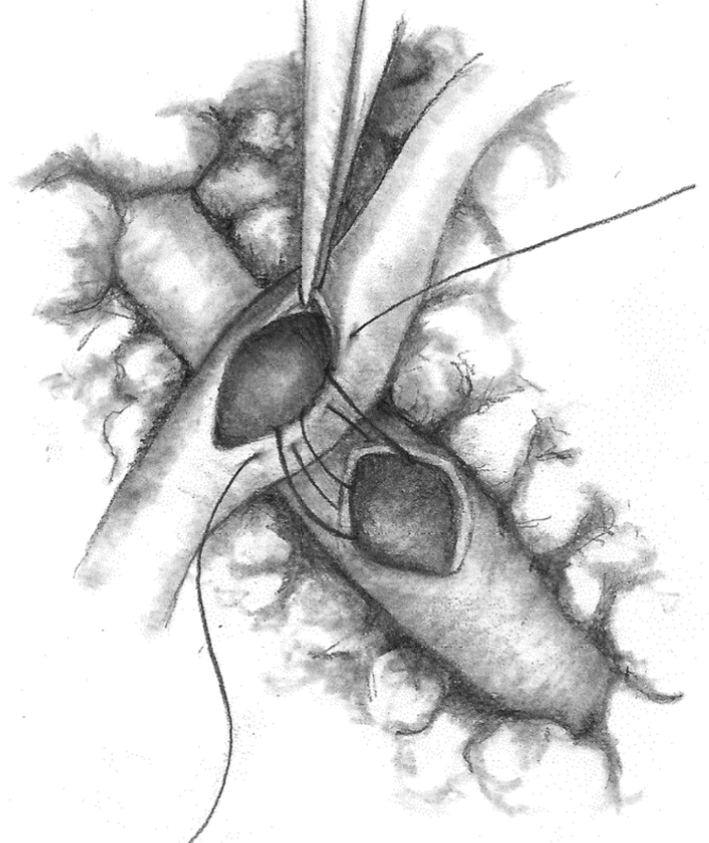
4-6. 第2肢を静脈にする — SAVE RITA 試験
「LITA を軸にした Y 複合グラフトの第2肢は、RITA でなければならないか」に答えたランダム化試験〔Kim 2014、224例〕。1年造影で、大伏在静脈複合グラフトの開存 97.1%（238/245）は RITA 複合グラフト 97.1%（198/204）に非劣性（p<0.001）。FitzGibbon グレードにも差はなく、1年・4年の生存と MACCE にも差はなかった。
理論的根拠は「上行大動脈からの直接の圧・循環ストレスに静脈を曝さず、in situ ITA が放出する一酸化窒素に持続的に曝す」ことだと説明されている。
4-7. 順次（sequential）吻合するか、個別に置くか
Asan Medical Center の 2,515例（PSマッチ 901ペア）〔Park 2020〕では、死亡・心筋梗塞・再血行再建に差はなく、グラフト開存は順次吻合が有意に良好だった（調整後 HR 0.61, 95%CI 0.45–0.82, p<0.001）。
ただし「1本の蛇行静脈で左右両領域をつなぐ（snake graft）」のは別問題である。SWEDEHEART の 6,895例〔Wallgren 2019〕では、
- 30日：複合エンドポイント OR 1.31（1.03–1.68, p=0.03）、再造影 OR 1.51（1.07–2.14, p=0.02）、死亡は OR 1.47（p=0.07）と snake 群で悪い傾向
- 中期（中央値35か月）：複合エンドポイント HR 1.08（0.95–1.22, p=0.24）で差は消える
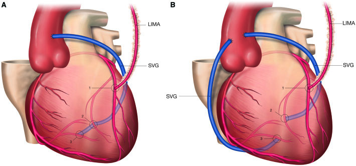
4-8. 第2の導管を何にするか — 選択アルゴリズム
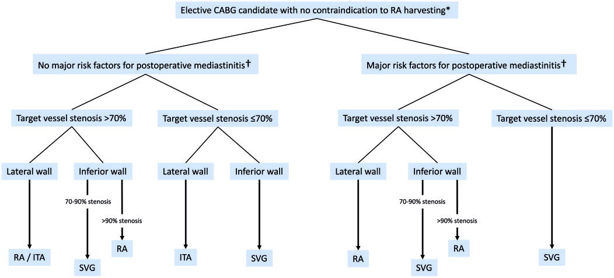
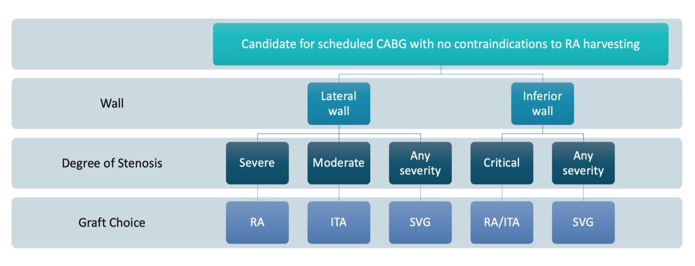
4-9. 術前に「届くかどうか」を決めておく
多枝 CABG で最後まで決まらないのが「RITA がその標的に届くか」である。従来は術中に実際に当ててみて決めていた——それが手術の遅延と精度低下を生む。広島の8例の報告〔Hiraoka 2026〕は、造影 CT からホログラムを作り、仮想の in situ ITA と実際の ITA 長を術前に比較して到達可否を判定した。
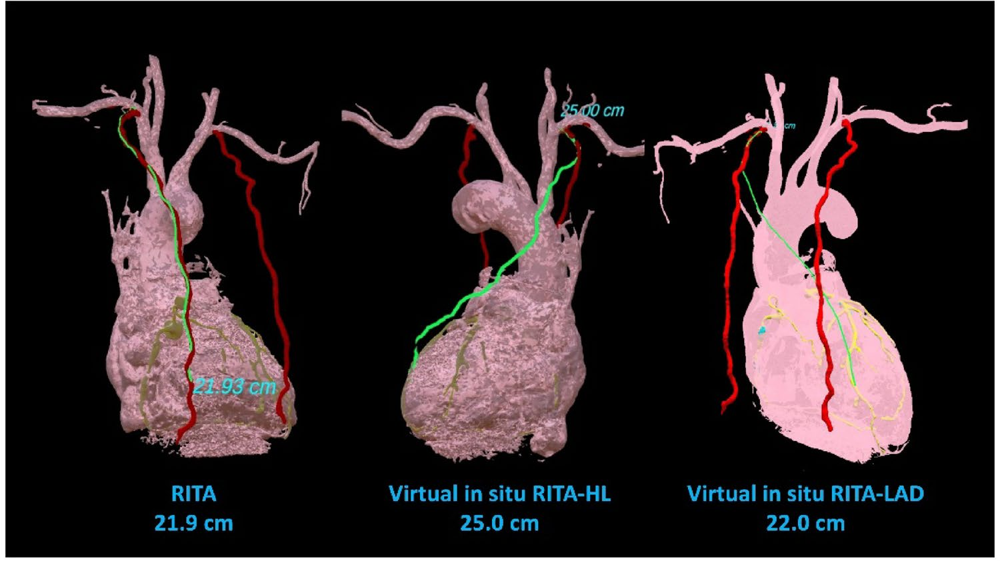
第5章 吻合と難しい標的
5-1. 心筋内に埋没した LAD
心筋内走行 LAD の頻度は 2.2〜13%〔Osman 2026〕。視診・触診で見つからないときに闇雲に切り込むと心室穿孔を起こす。Osman らは「構造化された同定戦略」を推奨し、手技によっては心室損傷のリスクが小さいながら実在すると警告している。
損傷したときの止血は、LAD とグラフトの開存を保ったまま行わねばならない。
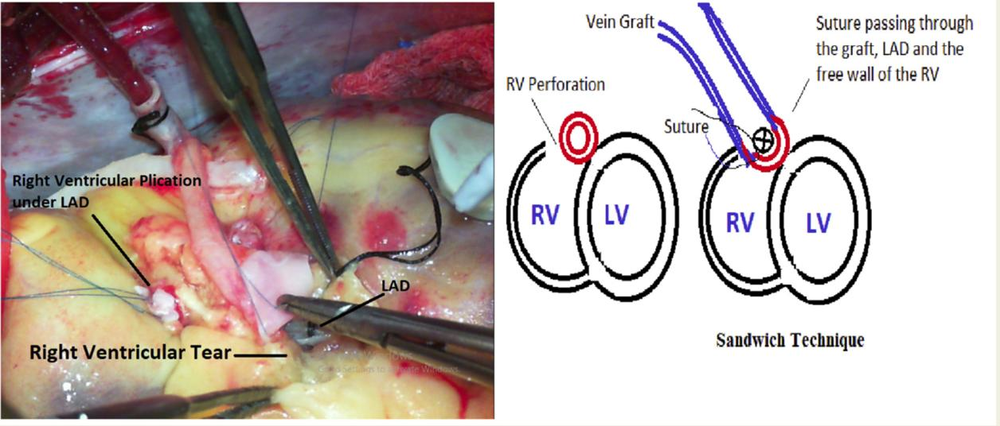
5-2. びまん性病変 — 内膜摘除という「切り札」
熊本大学のグループによる手技解説〔Nishigawa 2021〕。冠動脈内膜摘除（CE）は「最も技術的に難しい手技の一つ」だが、選択された症例では代替がない。
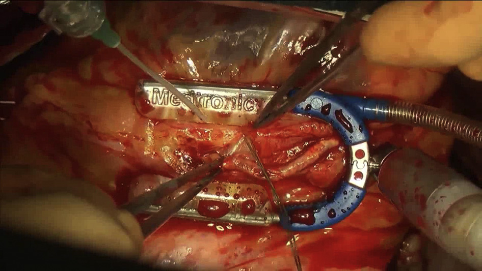
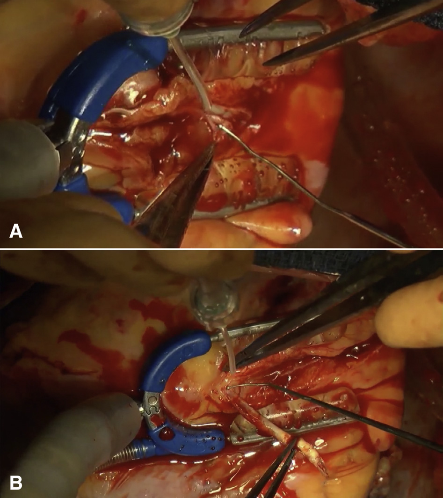
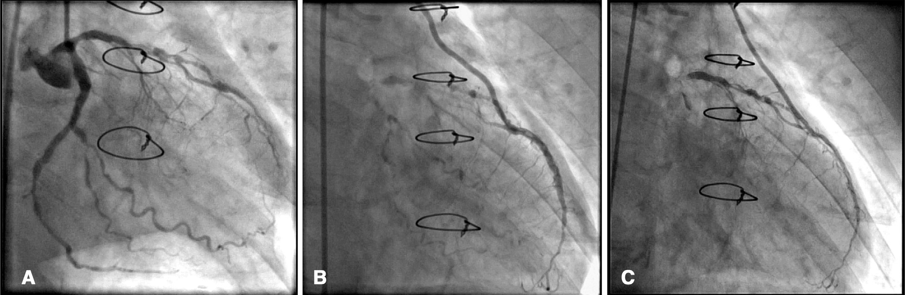
静脈パッチによる血管形成術という選択肢もある。
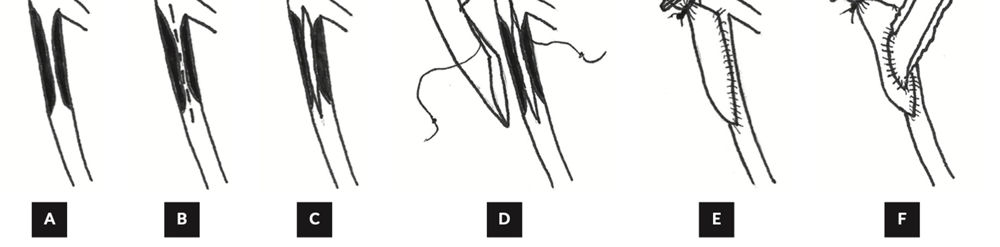
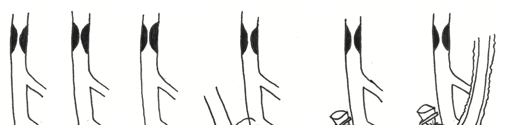
ステントが長大に入った LAD（full metal jacket）では、手術の焦点が「どこに吻合するか」から「吻合できる床を作る」ことへ移る。
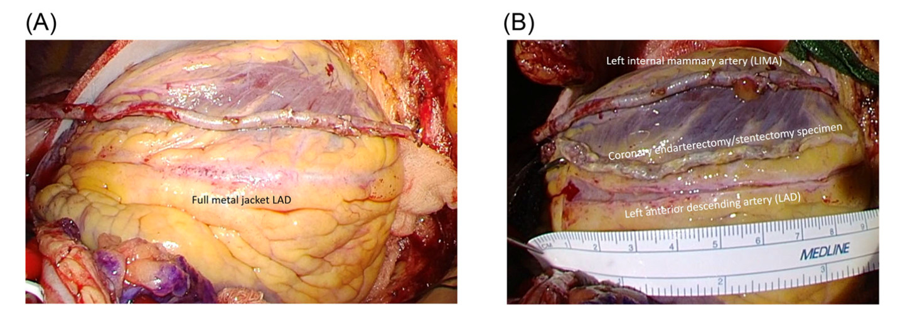
5-3. 上行大動脈が触れない — porcelain aorta と clampless
上行大動脈の全周性石灰化（porcelain aorta）は待機 CABG の 2〜9.3% に見られる〔Sirin 2021〕。CABG 中に検出される塞栓の大半は大動脈遮断と側方遮断のときに起きる。
側方遮断せずに中枢側吻合を作る簡便な工夫として、Foley カテーテルのバルーンを大動脈内から当てて止血する方法がある〔Wang 2021、30例〕。
5-4. 心表面エコー（epiaortic ultrasound）
E-CABG レジストリ 7,241例＋メタ解析〔Biancari 2020〕。
- 全体で、大動脈操作なし 0.3% vs 操作あり 1.3% の脳梗塞率（p=0.003）
- 傾向スコアマッチ 660 ペアで、心表面エコー実施 0.6% vs 非実施 2.6%（p=0.007）
- 6研究11,496例のプール：0.6% vs 1.9%、リスク比 0.40（0.24–0.66）、I²=0%
- 脳梗塞1件を防ぐための必要数（NNT）= 76.9
結論は2段構えである。「大動脈操作を避けるのが最も脳梗塞が少ない。操作が避けられないなら、心表面エコーが術式を導いてリスクを下げる。」触診と経食道心エコーでは代用できない。
5-5. 通過時間流量計（TTFM）— 数字の読み方
〔Niclauss 2017〕のクリティカルレビューが基準値を整理している。
| 指標 | 目安 |
|---|---|
| 平均グラフト流量（MGF） | ITA グラフト ≥ 20 mL/分、静脈グラフト 30〜40 mL/分 |
| 拍動指数（PI） | ≤ 5（ガイドラインの参照値） |
| 収縮期逆流の増加・PI 上昇 | 転帰不良を予測、競合血流の同定に役立つ |
| 拡張期充満率 | 予測指標として確認できず |
同レビューが挙げる限界も正直に押さえておくべきである——9研究のグラフト不全率は 12%、しかしTTFM のグラフト不全検出感度は低く、閾値も研究間でばらつく。静脈グラフトの遅発性不全を捉える道具ではない。
若手にとって重要なのは次の点である。マラヤ大学の155例〔Tan 2022〕では、指導医群と研修医群で TTFM も術後合併症・死亡も差がなく、一方で動脈グラフトの PI ≤ 3 の患者は IABP 使用と長期人工呼吸が有意に少なかった。TTFM は「合格・不合格」を告げる装置ではなく、自分の吻合を数値で振り返る教育ツールとして機能する。
第6章 トレーニング — 何から始め、何例で何が変わるか
6-1. 最初の一歩 — 単独 LIMA-LAD の OPCAB
ハンブルクの180例の解析〔Naito 2024〕は、これ以上ない直球の問いに答えている。「単独 LIMA-LAD の OPCAB は研修に適切か」。
- 対象：正中切開・単独 LAD バイパス・in situ LIMA のみ（人工心肺使用例、他導管、MIDCAB、多枝病変は除外）
- 研修医（指導下）63例 vs 経験豊富な術者117例
- 院内死亡（p=1.000）・周術期心筋梗塞（p=0.246）・脳梗塞（p=0.655）・急性腎障害（p=0.175）のいずれも差なし
- ただし前提として、研修医はすでに on-pump CABG の経験がある
理由は第2章から明らかである——LAD は最小の脱転で出せる。つまり「脱転で壊す」リスクが最も低い枝から入る、という設計になっている。
6-2. シミュレータ — 何がどれだけ変わるか
分散練習（distributed practice）の効果〔Fann 2008、心臓外科レジデント8名〕
- 携帯型タスクステーションでの吻合時間：351 ± 111 秒 → 281 ± 53 秒（−20%, p=0.07）
- 拍動心モデル（70 bpm）での吻合時間：426 ± 115 秒 → 362 ± 94 秒（−15%, p=0.03）
- 自宅練習時間（90〜540分）と上達度は相関しなかった
- 8名中2名は改善しなかった（シミュレータの天井効果／学習者のプラトー）
カリキュラム化するとどうなるか〔Anand 2021、Duke、レジデント17名・指導医12名の1年間〕
- 独習の実施率：ベースライン 21% → 第4四半期 82%（p=0.02）
- TSDA Vessel Anastomosis Assessment：42/65 → 54/65（p=0.04）
- 吻合時間：平均 5分6秒短縮（p=0.02）。若手レジデントは 6分36秒、上級レジデントは 3分6秒短縮
- 鍵は3点セット：低忠実度シミュレータ＋質の高い器具＋指導医メンター
皮膚切開から閉胸までを通すアプローチもある〔Tozzi 2022、スイス6施設、レジデント16名〕。成人胸郭のシリコン製ヒューマノイドで、心停止下 3枝 CABG を両側内胸動脈＋ハイドロゲル静脈で2例分通す。1人あたり遠位吻合6か所・中枢側吻合2か所。結果として内胸動脈3本（4.6%）を採取中に重度損傷、1例（3.1%）で大動脈送血時に大動脈が裂けた——実際の手術で起きる失敗が、実際に起きる。
6-3. 学習曲線 — 何例で何が起きるか
数字を3つ並べる。
① OPCAB の定常状態まで：約65例〔Han 2023、北京大学人民医院、9名・2,307例〕 6段階の progressive level を指導者監督下で進める訓練コースで、CUSUM 学習曲線を越えて定常状態に達するのに約65例を要した。全術者の死亡率・合併症率はファネルプロットの95%信頼区間内に収まった。
② 多動脈 BITA T グラフトの安定まで：125〜150例〔Kletzer 2024、Freiburg、1,764例〕 研修医650例 vs 指導医1,114例で死亡率に差なし（1.0% vs 0.8%, p=0.4）。ただし遠位吻合数（3.06 vs 3.38, p<0.001）と完全血行再建達成率（80% vs 92%, p<0.001）は指導医が上。リスク調整 CUSUM では150例まで複合エンドポイントの期待発生頻度が低下し続け、手術時間は125例で頭打ちになった。
③ ルーチン OPCAB へ移行するときの症例選択〔Song 2003、Emory、1,479例〕 単一術者の実践が従来型90% → OPCAB 93% へ移行した過程の記録。死亡率は OPCAB 1.0%、on-pump 2.1%。移行を可能にしたのは「鈍縁枝の展開手技の確立」と「吸引式スタビライザの改良」であり、駆出率低下例・左主幹部病変・複雑3枝病変は 200例の経験を積むまで OPCAB から除外していた。現在の除外は虚血性心室性不整脈、心停止例、左肺全摘後や高度漏斗胸で心臓を右方へ動かせない例のみ。
65例で「安全に終えられる」ようになり、125〜150例で「速く・完全にできる」ようになる。 そしてその間、難症例を意図的に外す（Song の 200例）ことが、学習曲線を安全に渡る唯一の方法である。「難しい症例で練習する」は選択肢に無い。
6-4. 多動脈グラフトのプログラムを立ち上げる
EACTS 冠動脈タスクフォースの段階的アプローチ〔Gaudino 2020〕は、多動脈グラフトには量と成績の関係（volume-to-outcome relationship）があり、経験不足は手術リスクを上げるという前提から出発する。だからこそ段階を踏む。第3章・第4章で見た「骨格化 → 長さ → 複合グラフト → 到達範囲」という技術の連鎖が、そのままプログラム設計の順序になる。
付録
A-1. この文書の作り方（再現手順）
- PubMed E-utilities で34クエリ（展開/脱転・導管採取・グラフト構成・吻合・術中評価・教育）→重複除去1,238編
- 手技記述性・図表の期待値・教育的価値で 60編を選定、全 PMID を esummary で検証
- 50編の全文 PDF を取得（OA 20編は Europe PMC 経由で自動取得、30編は購読誌から手動取得）。MMCTS 3編は PDF が存在しないため本文と動画チャプターを取得
- 全 PDF を
pdftotext -layoutでテキスト化して精読 - 原典 PDF から埋め込みラスタ画像をネイティブ解像度で抽出（69点。例：Ricci の線画は 1,200 dpi）。図番号は実ページのキャプションと突合して確定し、59点を本文に採用
- PDF は
~/Documents/All Papers/Clinical/Coronary/にライブラリ規約でリネームして格納
A-2. 図表一覧（全59点）
| 図 | 内容 | 出典 |
|---|---|---|
| 1-1 | 横隔膜に沿った心膜切開の延長 | Magee 2003 Fig 1 |
| 2-1 | 脱転中の TEE 四腔像（RV 圧潰） | Nierich 2000 Fig 4 |
| 2-2 | 急性血行動態破綻の実波形 | Nierich 2000 Fig 3 |
| 2-3 | 斜洞の解剖 | Bergsland 1999 Fig 1 |
| 2-4 | single suture 法（A→C） | Ricci 2000 Fig 1 |
| 2-5 | スネアの張り方 | Bergsland 1999 Fig 2 |
| 2-6 | tape による挙上 | Bergsland 1999 Fig 3 |
| 2-7 | LAD の展開 | Ricci 2000 Fig 2 |
| 2-8 | 対角枝の展開 | Ricci 2000 Fig 3 |
| 2-9 | 鈍縁枝：正しい展開 | Ricci 2000 Fig 4 |
| 2-10 | 鈍縁枝：圧迫する展開 | Ricci 2000 Fig 5 |
| 2-11 | 右冠動脈の展開 | Ricci 2000 Fig 6 |
| 2-12 | 後下行枝の展開 | Ricci 2000 Fig 7 |
| 2-13 | PDA（左ブレード接続） | Ricci 2000 Fig 8 |
| 2-14 | 心尖吸引で挙上した心臓の後面 | Gründeman 2004 Fig 2 |
| 2-15 | 心尖吸引脱転の血行動態 | Gründeman 2004 Fig 1 |
| 2-16 | Trendelenburg 使用頻度（部位別） | Nierich 2000 Fig 1 |
| 2-17 | ドパミン使用頻度（部位別） | Nierich 2000 Fig 2 |
| 2-18 | 肺動脈の連続波ドプラ | Shim 2023 Fig 1 |
| 2-19 | outside-inside 法（MICS） | Albert 2024 Fig 1 |
| 3-1 | LIMA 採取の3法 | Laugesen 2024 Fig 2 |
| 3-2 | ロボットのドッキング | Issa 2025 Fig 3 |
| 3-3〜3-7 | 橈骨動脈：解剖・Allen・組織・切開・harmonic | Tatoulis 2021 Fig 1,2,5,6,9 |
| 3-8 | 15年後の橈骨動脈グラフト | Gaudino 2019 Fig 3 |
| 3-9,3-10 | no-touch SVG の採取と吻合 | Inaba 2020 Fig 1,2 |
| 3-11〜3-14 | GEA：解剖・剥離・骨格化・吻合部位 | Suma 2016 Fig 1,2,3,5 |
| 4-1 | set-point 概念 | Calafiore 2025 Fig 1 |
| 4-2 | in situ vs Y 配置 | Glineur 2016 Fig 1 |
| 4-3 | 複合グラフトの構成 | Kawajiri 2018 Fig 3 |
| 4-4 | 側側吻合の2形式 | Kawajiri 2018 Fig 1 |
| 4-5 | seagull effect | Kawajiri 2018 Fig 2 |
| 4-6 | snake vs separate | Wallgren 2019 Fig 1 |
| 4-7 | 導管選択アルゴリズム | Gaudino 2020 Fig 2 |
| 4-8 | MAG の患者選択 | Vervoort 2023 Fig 1 |
| 4-9 | RITA の VR シミュレーション | Hiraoka 2026 Fig 2 |
| 5-1 | 右室穿孔の sandwich 修復 | Osman 2026 Fig 3 |
| 5-2〜5-4 | 内膜摘除：核の摘出・器具・造影 | Nishigawa 2021 Fig 1,2,3 |
| 5-5,5-6 | 静脈パッチ血管形成術 | Osman 2026 Fig 2 |
| 5-7 | full-metal-jacket LAD の再建 | Osman 2026 Fig 4 |
| 5-8 | porcelain aorta の CT | Sirin 2021 Fig 1 |
| 5-9,5-10 | Foley バルーンによる無遮断吻合 | Wang 2021 Fig 2,1 |
| 6-1 | OPCAB トレーニングモデル | Naito 2024 Fig 1 |
| 6-2 | 携帯型吻合タスクステーション | Fann 2008 Fig 2 |
| 6-3 | レジデント配布キット | Anand 2021 Fig 1 |
| 6-4,6-5 | ヒューマノイドの学習工程 | Tozzi 2022 Fig 1,4 |
| 6-6 | 生体拍動下動物実験 | Han 2023 |
A-3. 引用文献
- Kesieme EB, et al. Comprehensive Review of Coronary Artery Anatomy Relevant to Cardiac Surgery. Curr Cardiol Rev. 2025;21(2). PMID 39484768
- Magee MJ, Edgerton JR. Beating heart coronary artery bypass: operative strategy and technique. Semin Thorac Cardiovasc Surg. 2003;15(1):83-91. PMID 12813693
- Osman A, et al. Complex Coronary Artery Bypass Grafting: Intraoperative Challenges and Surgical Strategies in Contemporary Practice. J Clin Med. 2026;15(7):2775. PMID 41977076
- Soltoski P, et al. Techniques of Exposure and Stabilization in Off-Pump Coronary Artery Bypass Graft. J Card Surg. 1999;14(5):392-400. PMID 10875598
- Ricci M, et al. Exposure and mechanical stabilization in off-pump coronary artery bypass grafting via sternotomy. Ann Thorac Surg. 2000;70(5):1736-40. PMID 11093536
- Bergsland J, et al. "Single suture" for circumflex exposure in off-pump coronary artery bypass grafting. Ann Thorac Surg. 1999;68(4):1428-30. PMID 10543532
- Chang WI, et al. Hemodynamic changes during posterior vessel off-pump coronary artery bypass: comparison between deep pericardial sutures and vacuum-assisted apical suction device. Ann Thorac Surg. 2004;78(6):2057-62. PMID 15561035
- Gründeman PF, et al. Ninety-degree anterior cardiac displacement in off-pump coronary artery bypass grafting: the Starfish cardiac positioner preserves stroke volume and arterial pressure. Ann Thorac Surg. 2004;78(2):679-84. PMID 15276546
- Nierich AP, et al. Heart displacement during off-pump CABG: how well is it tolerated? Ann Thorac Surg. 2000;70(2):466-72. PMID 10969664
- Porat E, et al. Hemodynamic changes and right heart support during vertical displacement of the beating heart. Ann Thorac Surg. 2000;69(4):1188-91. PMID 10800817
- Gründeman PF, et al. Vertical displacement of the beating heart by the octopus tissue stabilizer: influence on coronary flow. Ann Thorac Surg. 1998;65(5):1348-52. PMID 9594865
- Shim JK, et al. Hemodynamic management during off-pump coronary artery bypass surgery: a narrative review of proper targets for safe execution and troubleshooting. Korean J Anesthesiol. 2023;76(4):267-79. PMID 36824043
- Albert A, et al. Standardized exposure of the lateral and posterior wall in off-pump minimally invasive cardiac surgical coronary artery bypass grafting. JTCVS Tech. 2024;26:61-63. PMID 39156549
- Masroor M, et al. All we need to know about internal thoracic artery harvesting and preparation for myocardial revascularization: a systematic review. J Cardiothorac Surg. 2021;16(1):354. PMID 34961523
- Kusu-Orkar TE, et al. Skeletonized or Pedicled Harvesting of Left Internal Mammary Artery: A Systematic Review and Meta-analysis. Semin Thorac Cardiovasc Surg. 2021;33(1):10-18. PMID 32979482
- Laugesen S, et al. How to harvest the left internal mammary artery—a randomized controlled trial. Interdiscip Cardiovasc Thorac Surg. 2024;38(5):ivae102. PMID 38775645
- Mazur P, et al. Left Internal Mammary Artery Skeletonization Reduces Bleeding—A Randomized Controlled Trial. Ann Thorac Surg. 2021;112(3):794-802. PMID 33171172
- Ingason AB, et al. Open vs Intact Pleura During Internal Thoracic Artery Harvesting: A Meta-Analysis of Randomized Trials. Ann Thorac Surg. 2026;122(2):498-509. PMID 42025666
- Sutter FP, Wertan MC. Robotic-assisted bilateral internal thoracic artery harvest. Ann Cardiothorac Surg. 2018;7(5):704-6. PMID 30505758
- Issa HMN, et al. The 10 Commandments of Robotic Bilateral Internal Thoracic Artery Harvesting. Innovations (Phila). 2025;20(6):511-16. PMID 40589185
- Tatoulis J. The radial artery: An important component of multiarterial coronary surgery and considerations for its optimal harvest. JTCVS Tech. 2021;5:46-55. PMID 34318106
- Gaudino M, et al. Technical Aspects of the Use of the Radial Artery in Coronary Artery Bypass Surgery. Ann Thorac Surg. 2019;108(2):613-23. PMID 30552888
- Carranza CL, et al. Endoscopic or Open Radial Artery Harvest in Coronary Artery Bypass Surgery. NEJM Evid. 2026;5(1):EVIDoa2500199. PMID 41432491
- Inaba Y, et al. No-touch saphenous vein graft harvesting technique for coronary artery bypass grafting. Gen Thorac Cardiovasc Surg. 2020;68(3):248-53. PMID 31376117
- Suma H. The Right Gastroepiploic Artery Graft for Coronary Artery Bypass Grafting: A 30-Year Experience. Korean J Thorac Cardiovasc Surg. 2016;49(4):225-31. PMID 27525230
- Kawajiri H, et al. Bilateral internal thoracic artery grafting: in situ or composite? Ann Cardiothorac Surg. 2018;7(5):673-80. PMID 30505752
- Jabagi H, et al. Optimal Configuration for Bypass of the Left Anterior Descending Artery During Bilateral Internal Thoracic Artery Grafting. Ann Thorac Surg. 2020;110(6):1917-25. PMID 32439394
- Glineur D, et al. Bilateral Internal Thoracic Artery Configuration for Coronary Artery Bypass Surgery: A Prospective Randomized Trial. Circ Cardiovasc Interv. 2016;9(7):e003518. PMID 27406988
- Vervoort D, et al. Reconstruction Technique Options for Achieving Total Arterial Revascularization and Multiple Arterial Grafting. J Clin Med. 2023;12(6):2275. PMID 36983276
- Calafiore AM, Prapas S, Gaudino M. Arterial conduits for coronary bypass grafting: the set-point concept. Eur Heart J. 2025;46(10):922-25. PMID 39718243
- Kim KB, et al. A randomized comparison of the Saphenous Vein Versus Right Internal Thoracic Artery as a Y-Composite Graft (SAVE RITA) trial. J Thorac Cardiovasc Surg. 2014;148(3):901-8. PMID 24973924
- Park SJ, et al. Sequential Versus Individual Saphenous Vein Grafting During Coronary Arterial Bypass Surgery. Ann Thorac Surg. 2020;109(4):1165-73. PMID 31539513
- Wallgren S, et al. A single sequential snake saphenous vein graft versus separate left and right vein grafts in coronary artery bypass surgery: SWEDEHEART. Eur J Cardiothorac Surg. 2019;56(3):518-25. PMID 30838388
- Paterson HS, Bannon PG, Taggart DP. Competitive flow in coronary bypass surgery: The roles of fractional flow reserve and arterial graft configuration. J Thorac Cardiovasc Surg. 2017;154(5):1570-75. PMID 28651939
- Doenst T, et al. How to deal with nonsevere stenoses in coronary artery bypass grafting. Curr Opin Cardiol. 2022;37(6):468-73. PMID 36094465（本文未取得・抄録に基づく）
- Gaudino MFL, et al. How to build a multi-arterial coronary artery bypass programme: a stepwise approach. Eur J Cardiothorac Surg. 2020;58(6):1111-17. PMID 33247735
- Hiraoka T, Imai K, Takahashi S. Bypass graft design assisted by virtual reality simulation in multi-vessel coronary artery bypass grafting. Gen Thorac Cardiovasc Surg. 2026. PMID 41779085
- Klepper M, et al. Myocardial revascularization: Tips and tricks for performing a coronary anastomosis. Multimed Man Cardiothorac Surg. 2021. PMID 34705350（動画教材）
- Nishigawa K, et al. Coronary endarterectomy for diffusely diseased coronary artery: An ace in the hole in coronary artery surgery. JTCVS Tech. 2021;10:133-37. PMID 34977715
- Wang C, et al. New Proximal Anastomosis Technique for Calcified Ascending Aorta in Coronary Artery Bypass Grafting. Ann Thorac Surg. 2021;112(4):e307-10. PMID 33689738
- Sirin G. Surgical strategies for severely atherosclerotic (porcelain) aorta during coronary artery bypass grafting. World J Cardiol. 2021;13(8):309-24. PMID 34589167
- Biancari F, et al. Epiaortic Ultrasound to Prevent Stroke in Coronary Artery Bypass Grafting. Ann Thorac Surg. 2020;109(1):294-302. PMID 31421104
- Niclauss L. Techniques and standards in intraoperative graft verification by transit time flow measurement after coronary artery bypass graft surgery: a critical review. Eur J Cardiothorac Surg. 2017;51(1):26-33. PMID 27298393
- Tan PH, et al. Transit time flow measurement and outcome in coronary artery bypass grafting for surgeon and trainee. J Thorac Dis. 2022;14(1):36-42. PMID 35242366
- Fann JI, et al. Improvement in coronary anastomosis with cardiac surgery simulation. J Thorac Cardiovasc Surg. 2008;136(6):1486-91. PMID 19114195
- Anand J, et al. Coronary Anastomosis Simulation: Directed Interventions to Optimize Success. Ann Thorac Surg. 2021;111(6):2072-77. PMID 32891660
- De Raet JM, et al. How to build your own coronary anastomosis simulator from scratch. Interact Cardiovasc Thorac Surg. 2013;16(6):772-77. PMID 23456683
- Tozzi P, et al. Humanoids for teaching and training coronary artery bypass surgery to the next generation of cardiac surgeons. Interact Cardiovasc Thorac Surg. 2022;34(2):185-92. PMID 34647125
- Naito S, Reichenspurner H, Sill B. Is Single LIMA-LAD Bypass Appropriate for OPCAB Training? Thorac Cardiovasc Surg. 2024;72(6):458-62. PMID 38307118
- Kletzer J, et al. Safety and efficiency of trainees performing bilateral internal thoracic artery coronary bypass grafting using the T-graft technique. Eur J Cardiothorac Surg. 2024;67(1):ezae419. PMID 39820718
- Han Z, et al. Quality control in a training course of off-pump coronary artery bypass grafting surgery. JTCVS Open. 2023;14:252-60. PMID 37425436
- Song HK, et al. Safe evolution towards routine off-pump coronary artery bypass: negotiating the learning curve. Eur J Cardiothorac Surg. 2003;24(6):947-52. PMID 14643813
A-4. 著作権について
本文書に掲載した図はすべて原著論文からの引用であり、各図のキャプションに出典（著者・雑誌・巻号頁・図番号）を明記している。著作権は各出版社および著者に帰属する。個人の学習・参照目的での利用に限る。オープンアクセス（CC BY / CC BY-NC / CC BY-NC-ND）の図と購読誌の図が混在しているため、再配布・転載・公開の際は各誌のライセンスを個別に確認すること。
A-5. この文書がカバーしていないこと
- 吻合そのものの運針（heel-toe、パラシュート法など）は MMCTS の動画教材〔Klepper 2021〕が主教材であり、静止画では代替できない。本書では
md/mmcts/に本文と動画チャプター一覧を置くにとどめた - 臨床アウトカムの比較（OPCAB vs ONCAB、CABG vs PCI、導管別の長期生存）は
cabg_evidence/（265文献）が担当 - MIDCAB / TECAB の各論は
opcab_technique/（114編）とrobotic_technique/が担当